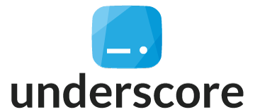

Commercial Experience
Director & Consultant -
Type Systems, Manchester
Scala development, team leadership and Scala training contracts:
Jan 2019 - Oct 2020
- Built a new product that tracks ITV's content from early stage sign-off through to its delivery, processing, and archival.
- A collection of Scala microservices aggregate data from other ITV systems, and present exceptional behaviour to operations users in a web UI written in TypeScript using React.
- Worked closely with the operations team to ensure the product delivered incremental improvements in their efficiency.
Oct 2018 - Dec 2018
- Development on Scala microservices that support HMRC for business.

Nov 2017 - Dec 2018
- Provided mentorship and training to a team of developers at YOOX Net-a-Porter, who were taking on a new Scala project. Worked through Underscore's "Scala with Cats" book with the team, provided code reviews and workshops regarding their Scala project.
- Built a flexible reference/credit checking system for Goodlord, a lettings platform. We finished this project 3 weeks ahead of schedule, delivering incremental improvements that resulted in a 40% increase in productivity of the referencing team by the end of the project.
- Prototyped an integration between Apache Spark and Hyperledger Fabric for advertising agency Blis, recording the source of advertising data in a blockchain.
Jul 2017 - Nov 2017
- Team Leadership on a new infrastructure project.
- Development on Scala microservices that allow users to upload files to HMRC.
Keywords:
Functional Programming, Scala, Cats, Http4s, Postgresql, RabbitMQ, AWS, BigQuery, Spark, Leadership, Training, Terraform, Puppet, TypeScript, Jenkins
Senior Software Engineer -
ITV, London
- Team Lead on the Content Delivery team, who are responsible for building a commericially enticing pipeline to get ITV's media/metadata to the right place, at the right time, in the correct format.
- Built a collection of event driven Scala micro-services, communicating with asynchronous messaging (using RabbitMQ), sychronous messaging (using HTTP and REST) and storing state in Postgresql.
- Experience with building and supporting production services on a hybrid platform, based in Amazon AWS and on-site data centres.
- Built reliable integrations between COTS systems for media archival and processing.
- Promoted the use of functional programming principles, pair programming and advocated the TypeLevel stack.
- Hired and line managed 3 smart and kind developers, helping them to grow within the organisation and build great software.
- Helped the team to build and open-source Bucky, an AMQP library written in Scala.
Keywords:
Functional Programming, Scala, Cats, Http4s, Postgresql, RabbitMQ, AWS, Leadership, Management, Recruitment, Jenkins